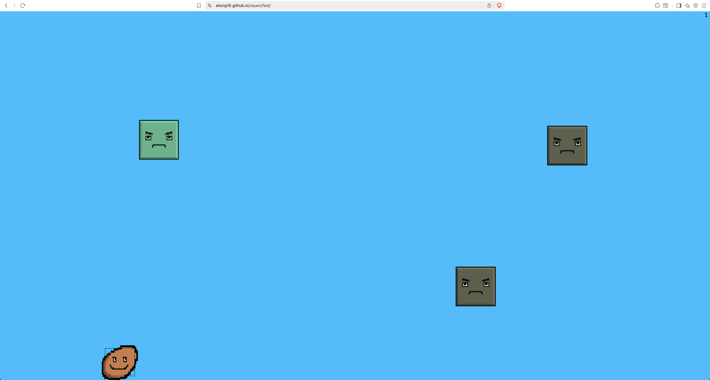
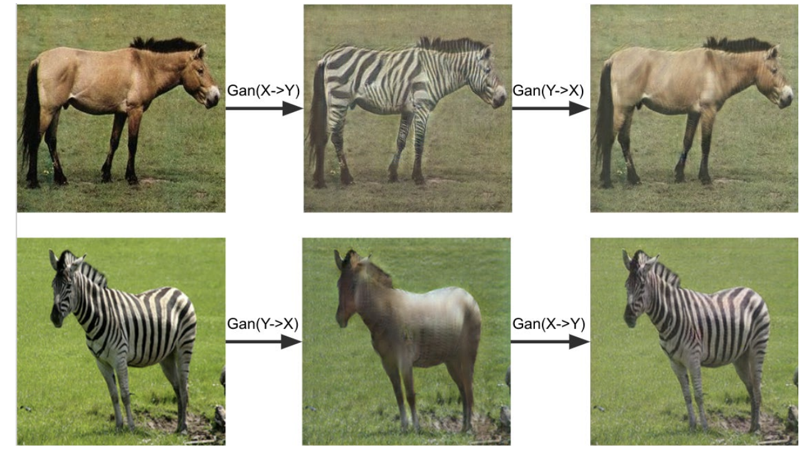

My First Blog Post -- Review of Past Projects
October 10, 2025
Welcome to my first blog post! In this post, we review some past projects. The goal is to reflect on past work before starting anything new. We review 3 projects: a web based 2D side-scroller game, an implementation of CycleGAN, and a cornell box graphics simulation.
Potato Jump -- Web Based 2D Side Scroller
Proceeding in chronological order, in high school (around 2015-2016) I created a 2D side-scroller game
which I called
"Potato Jump!".
It is a Jquery based web game that works well on desktop as well as mobile.
The goal is to make the potato jump to avoid the square obstacles
(who are aptly frowning).
I remember having fun implementing collision detection (you can see the hitbox
of the potato).
The "enemies" were generated to the right of the screen and increase in density
after every "wave". The "level" or "wave number" is on the top right of the
screen. What level can you get up to?
I fondly recall my sister creating the graphics for me (yes, she designed the potato!).
To this day, it still runs well, and you can play with it at this
link.
Here is the Github Repo.
Repo Link.
Screenshot of gameplay:

CycleGAN Implementation
In my undergraduate years (around junior or senior year), I took a computer vision course.
For the final group project, a group of four of us implemented CycleGAN, a deep learning
generative adversarial network "GAN" used for image to image translation. We were able to
transform images of zebras into images of horses.
In this project, I was responsible for implementing the primary training loop in tensor flow.
I remember I had to implement a custom training loop in a "cycle" using something called a
"gradient tape". I can't seem to find the source code for this project...
Here is the brief written by some of my teammates.
Link to abstract .
Some actual transformations from our implementation:

Cornell Box Simulation with Shadows and Physics
In my senior year of undergraduate studies, we were required to take a "capstone course". I elected
to take computer graphics with the famous Professor Andy Van Dam. This entailed taking an extra
half-credit lab
in addition to the regular computer graphics course. It was a phenomenal experience and one of my
favorite classes.
The extra half-credit lab made the course
significantly more challenging -- I remember only 4 students (including myself) elected to take it!
Throughout the course, we implemented a brush (like in photoshop), shapes rendering, image filtering,
scene
rendering, and ray tracing. Many of these were tied together in the final project, which I recorded at
this
Youtube link (also embedded below).
In the above video, we have balls bouncing around a cornell box.
It was a partnered project, and
we mostly used my implementations for the various components.
I recall getting the shadows to work took tremendous effort, involving intensive GPU level programming
in GLSL.
For more information, see this abstract
brief written by me.
Embedded youtube video simulation:
Conclusion
I enjoyed writing this article reviewing some of my past project experiences :) ! I felt a little bit nostalgic too. It also helped me get the scaffolding of this website set up -- so now I feel ready to expand. Onwards and upwards!
← Back to Blog